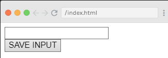
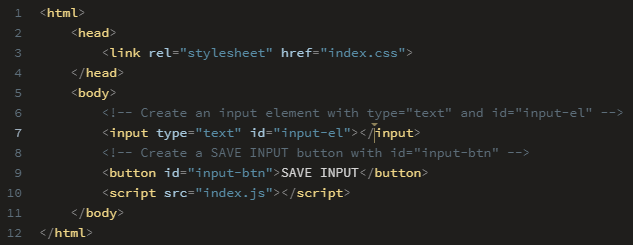
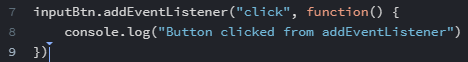
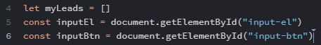
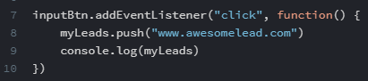
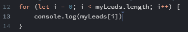
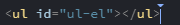
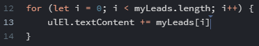
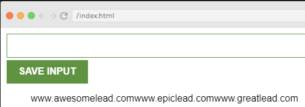
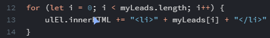

1: Set up the HTML
In lesson 2, Add Button & Input Tag, we just set it up as a regular HTML page!
So in the body tag, we simple add input and button elements, with id's to access via JavaScript later on.
The result:
The code:
Then, style to your heart's content!
2: Make the Button Work with JS
We get to our first JavaScript in lesson 4, Make the Input Button Work with onclick.
Remember to link the .js file in the HTML!
While there add the functionality to the button element:
button id="input-btn" onclick="saveLead()"
We begin the JS file by creating the function statement.
3: Make the Button 'Better'
Lesson 5, Refactor to addEventListener, we change how the button is activated. This is how it is commonly done by professionals.
In our JS, we grab the id:
let inputBtn = document.getElementById("input-btn")
This way we can remove the onclick from our HTML, so our JS handles all the event listeners.
4: Begin Work on the Input Array
On to lesson 8, Create the myLeads Array & inputEl.
Here we set up the infastructure to make a working extension.
Two variables are needed, to save the leads and to accept user input.
Here you consider which variables should be let or const, meaning 'decide which ones will change in the program.
Our button can be changed, as seen in the following code:
5: Add New Leads to the Array
Skipping to lesson 10, Push to the myLeads Array, we begin adding the leads so more can be displayed.
This will keep pushing the same hard-coded value into the array. So improvement is needed...
6: Actually Use the User Input
Lesson 11, Push the Value from the Input Field, makes it a lot more useful.
We access the value from the input thusly:
myLeads.push(inputEl.value)
7: Implement a Loop for the Leads
On to lesson 12, Use a for Loop to Log Out Leads, we begin to actually show the leads to the user.
Since the MVP requires us to display the leads to the user, we need to begin to show them one-by-one.
What better way than using a for loop?
Of course, I forgot to write myLeads[i], when reviewing! I consistently do this and wonder when I'll finally remember!
8: Get Ready to Display the Leads as a List
Lucky lesson 13, Create the Unordered List, starts work on how the leads will be displayed under the Submit button.
This lesson simply adds the element to the HTML:
And grabs the element in JavaScript:
const ulEl = document.getElementById("ul-el")
9: Put the Leads in the List
Moving on to lesson 14, Render the Leads in the Unordered List, we start out 'wrongly' showing them as plain text to be fixed later.
Remember to use += so it doesn't clear out the textContent each time!
And this is why this is the wrong way! Although we are getting there.
10: Actually Make Them a List
In lesson 15, we Render <li> Elements with innerHTML, meaning we use JavaScript to inject additon HTML in our index.html file.
These two lessons demonstrate the difference between textContent & innerHTML.
The former is less labour-intensive for our broswers, but interpret the given value literally. So <li> would show the list item tag directly to the user.
The latter can manipulate the DOM to create new HTML content on the page!
You can also use back tics to clean it up a bit:
`<li> ${myLeads[i]} <li>`
ALTERNATIVE to innerHTML
Cruising along to lesson 19, Use createElement() and append() instead of innerHTML we see a different method. It is important to remember to choose the best tool for each project.